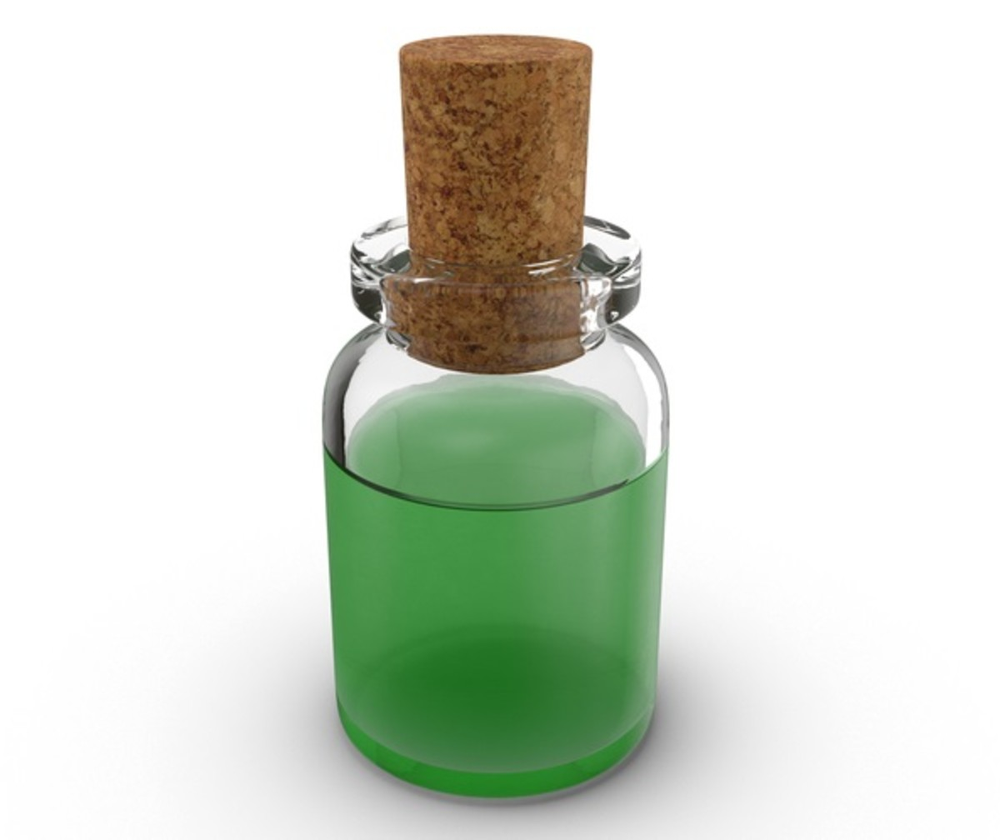

Resist Disease

Resist Disease decreases your chances of contracting a disease.
Ingredients (need to mix just 3):
- Elves Ear
- Spider Egg
- Rotten Flesh
- Juniper Berries
Steps:
- Add wine to cauldron.
- Dry and grind the ingredients
- Add the ingredients to the cauldron and simmer for two turns.
- Add charcoal so that the potion is not poisonous.
- Distill in phial.
Go to main page